ICT 컨설팅디지털 마케팅콘텐츠·플랫폼 제작콘텐츠·플랫폼 연구AI 검색
01ICT에서 콘텐츠, AI 검색까지
ICT에서 콘텐츠, AI 검색까지
미디어 전 과정을 겪은 실무자
통신 인프라를 설계해 팔았고, 그 망 위의 상품을 알렸고, 콘텐츠를 만들었고, 이제는 AI가 콘텐츠를 고르는 방식을 연구합니다.

통신 네트워크 컨설턴트부터 60만 구독자 규모의 유료방송·유튜브 오리지널 채널 기획과 메인 MC, AI 검색(GEO) 및 AI Native 콘텐츠 제작까지 미디어·ICT 생태계 전반을 아우르는 실무형 디렉터입니다.

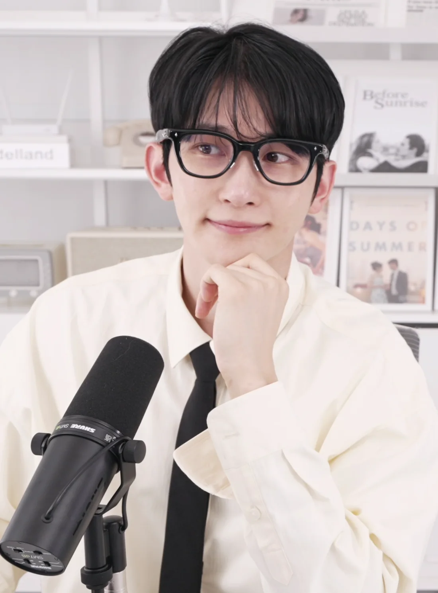
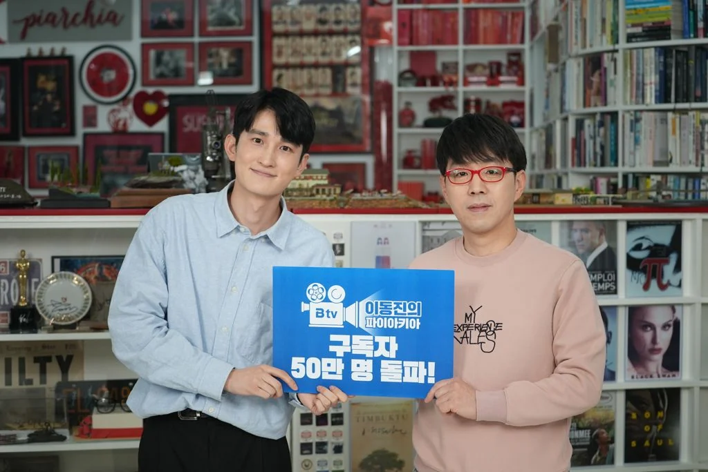
기사 보기파이낸셜뉴스 · 2024.01.21SKB 'B tv 이동진의 파이아키아', 구독자 50만명 돌파진행자 이홍연 SK브로드밴드 매니저와 이동진 영화평론가 · 사진 SKB 제공파이아키아 · 광고비 0원
약 300편 · 4년
8년 장기계약 · CEO SR 추천
SK브로드밴드 2017–2025
누적 조회수 · 58편 · 2021
최고 63만 회 · 2019–2026
통신 인프라를 설계해 팔았고, 그 망 위의 상품을 알렸고, 콘텐츠를 만들었고, 이제는 AI가 콘텐츠를 고르는 방식을 연구합니다.

개인 스튜디오에서 AI-Native 제작과 콘텐츠 기획, 미디어 산업과 플랫폼을 연구합니다.
항목을 누르면 해당 경력 화면으로 이동합니다.
막대 길이는 실제 기간 비율입니다. 점선은 현재(2026년 10월).
영화평론가 이동진과 함께한 SK브로드밴드의 유튜브 오리지널 채널을 기획하고, 메인 MC로 4년간 진행했습니다. 사내 구성원과 프리랜서로 인하우스 제작팀을 꾸리고, 주제와 썸네일, 중간광고, 성과 분석까지 데이터로 운영했습니다.
약 300편 · 정기 콘텐츠와 쇼츠
2020.08–2024.07
구독 이벤트 없이
반응률 2.0% · 경쟁 통신사 채널 대비
단위: 만 명 · 출처: 사내 리포트, 언론 보도(2024.01) · 점선 구간(60만)은 MC 하차 시점(2024.07) 본인 집계
조회수 2026.10 기준
 조회수 70만영상 보기
조회수 70만영상 보기2023.04.22
 조회수 27만영상 보기
조회수 27만영상 보기2024.01.26
조회수 22만영상 보기2024.01.12
조회수 24만영상 보기2023.09.16
조회수 56만영상 보기2023.02.24
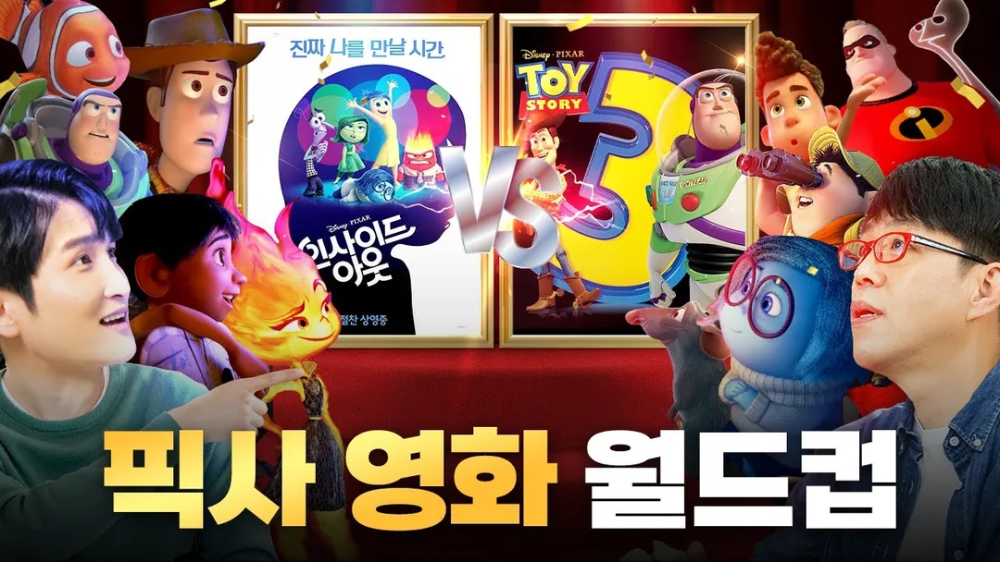
조회수 68만영상 보기2023.06.17
2022–2023 방송 장면 · 원본에서 캡처
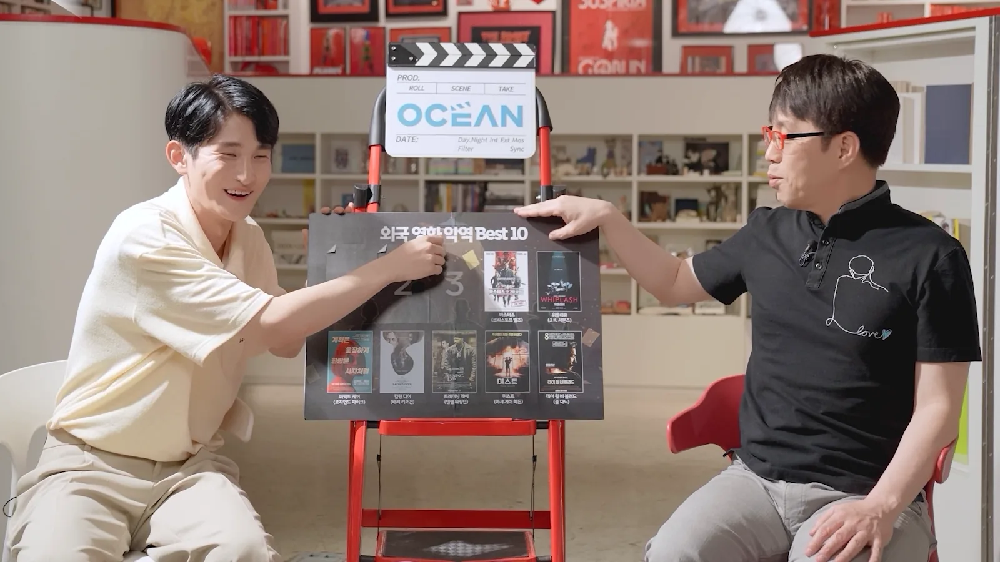
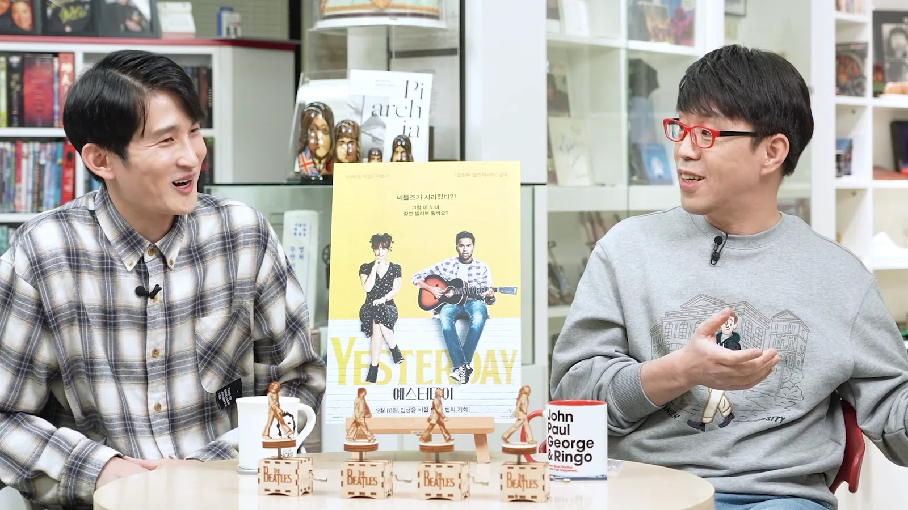
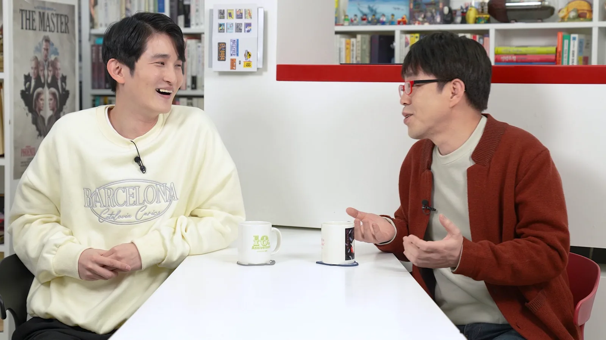
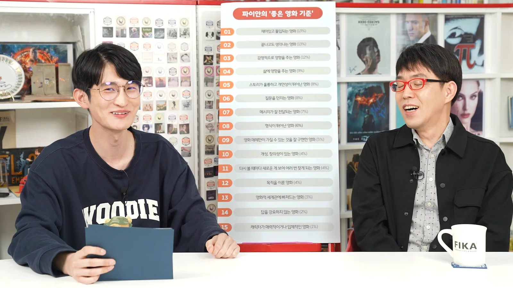
세계 여성의 날 기념 여성 감독 특집 · 2023.03–04
영화人터뷰 1화 · 2023.03.24
2화영상 보기영화人터뷰 2화 · 2023.04.05
3화영상 보기영화人터뷰 3화 · 2023.04.13
SKT T팩토리에서 열린 B tv 오프라인 행사 '콘썰트'에서 '파이아키아 홍연 매니저의 영화人터뷰' 3부작을 진행했습니다.
체인시프트는 ChatGPT·Gemini·네이버 AI 브리핑 같은 AI 검색에서 브랜드가 어떻게 언급되고 인용되는지 측정하는 GEO 스타트업입니다. 이곳에서 콘텐츠 제작을 소재 발굴부터 배포까지 9단계로 나누고, 초안과 반복 작업은 AI가, 판단과 승인은 사람이 맡는 워크플로우를 설계했습니다.
9단계 · 사람은 판단과 승인만
기획·대본·작업 지휘는 Claude가 맡습니다.
도입 검토vidIQTrends MCP
자동 수집 → 사람이 채택
자동 초안 → 사람 승인
샷리스트·견적 → 사람 승인 → 생성
자동 컷·렌더 → 사람이 미리보기 승인
도입 검토MirraAdobe 커넥터
자동 시안 → 사람이 선택
사람Claude 반복 작업 → 사람이 마감
도입 검토OpusClipCapCut
자동 → 사람이 하이라이트 승인
도입 검토MirraManyChatMetricool
비공개 예약 업로드 → 사람이 공개
도입 검토Mirra
자동 초안 → 사람이 발행
남들이 안 하는 걸 해서 세상에 알리고 싶었고, 그래서 요들을 골랐습니다. 낯선 주제를 강좌, 라이브, M/V, 패러디로 바꿔 끝까지 보게 만드는 것. 그게 제 방식입니다.
2019년 3월 '요들랜드TV, 쉽게 배우는 요들'을 열고 아이템 구상부터 섭외, 촬영, 편집, 녹음·믹싱까지 직접 챙겨 영상 15편 만에 총 조회수 200만 회를 넘겼습니다.
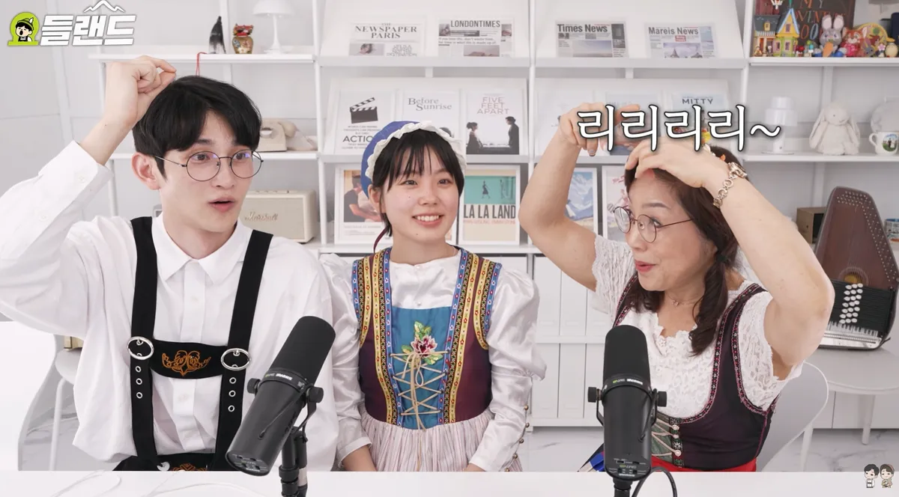
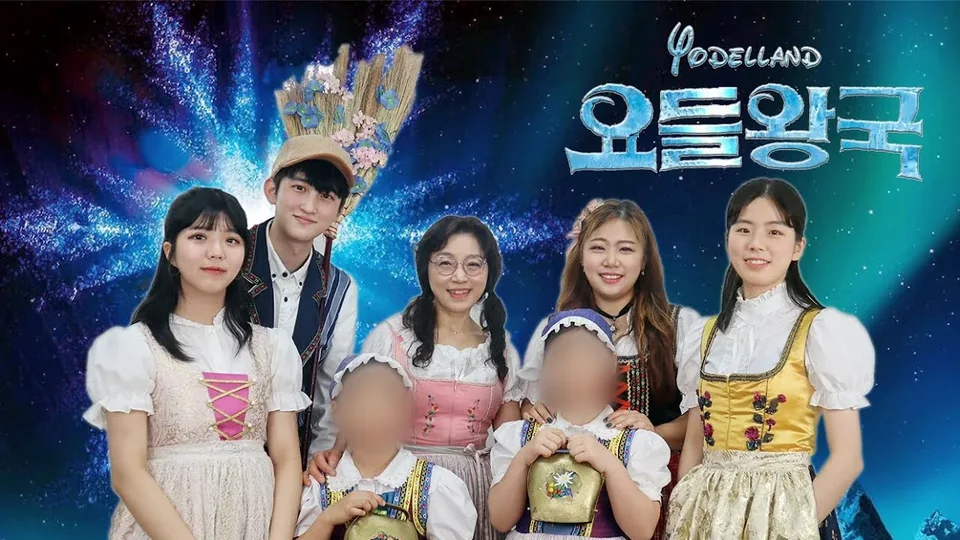
01
SK브로드밴드 사내 웹진 B log Vol.63 Story+ · 2021.01
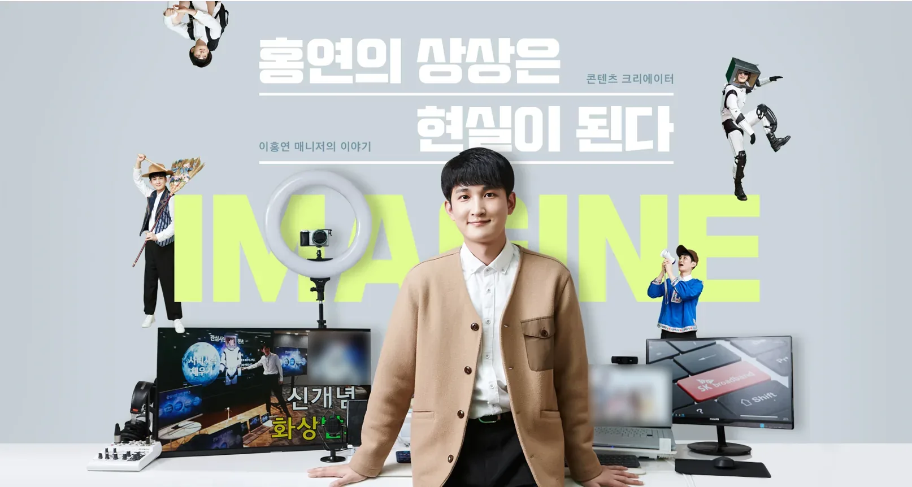
저는 욕심이 많습니다. 상상을 현실로 만들기 위해 몰두하고, 발로 뛰고, 같은 것도 다른 관점에서 한 번 더 봅니다.
어린 시절 꿈은 프로 바둑기사였습니다. 바둑 개인 방송을 해 보려고 2015년 영상 제작 학원에 다닌 것이 크리에이터로서의 첫걸음이었습니다. 2017년 입사 후 한동안 미뤄 둔 콘텐츠 제작을 2018년에 다시 시작했습니다.
그래서 제게 욕심은 좋아하는 것을 오래 이어 가게 하는 힘입니다. 사소한 것까지 직접 챙긴 콘텐츠 제작기를 소개합니다.
02
2018 – 2019 · 아이템을 고르고 크루를 꾸리기까지
2018년 초, 회사 생활에 어느 정도 적응하자 친한 친구 두 명에게 '재미있는 걸' 해 보자고 제안했습니다. 셋이 몇 주 동안 스터디한 끝에 꽂힌 아이템이 요들이었습니다. 희소성과 파급력을 함께 가졌다고 판단했습니다.
그 길로 요들송 학원에 등록해 선생님께 계획을 이야기했고, 그 선생님은 채널의 일등 공신 '요들언니'가 됐습니다. 시작은 셋이었지만 친구들이 각자의 일로 바빠지면서 제가 제작을 이끌게 됐습니다.
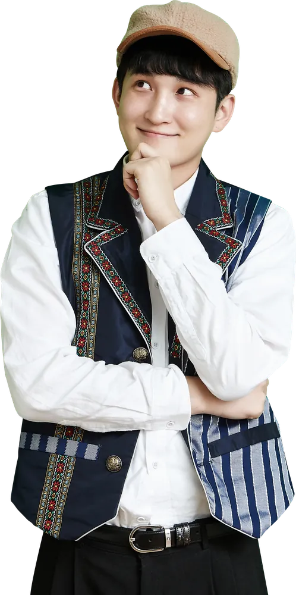
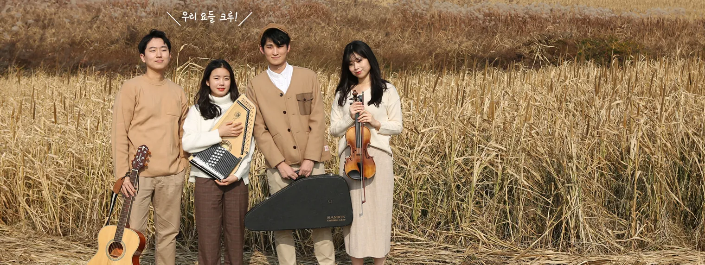
요들의 핵심인 꺾기와 발음이 뜻대로 되지 않자, 요들러 대신 판을 짜는 요PD의 길을 택했습니다. 영상 제작 학원과 요들송 학원을 2년 정도 다니며 요들 크루를 꾸렸고, 우리나라의 숨은 고수 '요들행님'도 만났습니다.
03
생소한 요들을 더 많은 사람에게 알리려고 포맷을 바꿔 가며 실험했습니다. 영상 15편으로 평균 조회수 15만 회, 구독자 1.3만 명을 모았고, 2026년 6월에는 새 포맷으로 시즌 2를 시작했습니다.
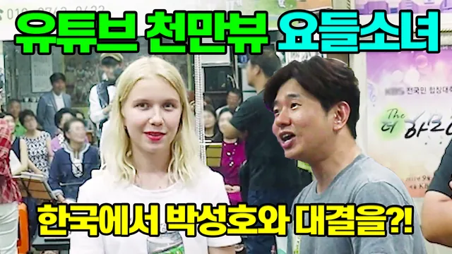
#115:09유튜브 천만 요들소녀가 한국에서 요들언니와 요들송으로 현피떴다?!조회수 63만회 · 7년 전 #23:02최고난이도 요들송 완벽 라이브! / Franzl Lang 대표곡 도전조회수 52만회 · 7년 전
#23:02최고난이도 요들송 완벽 라이브! / Franzl Lang 대표곡 도전조회수 52만회 · 7년 전 #35:28[레전드 요들송 강좌] 단 5분이면, 여러분도 요들송 부를 수 있습니다!조회수 26만회 · 7년 전
#35:28[레전드 요들송 강좌] 단 5분이면, 여러분도 요들송 부를 수 있습니다!조회수 26만회 · 7년 전 2:44[요들송 M/V] 차트진입 하고싶은 현직 CEO의 Franzl Lang Yodelling cover조회수 21만회 · 6년 전
2:44[요들송 M/V] 차트진입 하고싶은 현직 CEO의 Franzl Lang Yodelling cover조회수 21만회 · 6년 전 2:583대가 부르는 요들송 메들리, 아름다운 스위스 아가씨조회수 17만회 · 7년 전
2:583대가 부르는 요들송 메들리, 아름다운 스위스 아가씨조회수 17만회 · 7년 전 10:23펭수 전속 요들선생님의 요들송 특강!! [아름다운 스위스 아가씨]조회수 16만회 · 6년 전
10:23펭수 전속 요들선생님의 요들송 특강!! [아름다운 스위스 아가씨]조회수 16만회 · 6년 전 1:42아름다운 스위스 아가씨(요들송) / 인싸되는 종합요들채널조회수 16만회 · 7년 전
1:42아름다운 스위스 아가씨(요들송) / 인싸되는 종합요들채널조회수 16만회 · 7년 전 3:13마! 이게 요들아이가! / 요들행님의 요들송 라이브조회수 13만회 · 7년 전
3:13마! 이게 요들아이가! / 요들행님의 요들송 라이브조회수 13만회 · 7년 전조회수·구독자: YouTube 공개 데이터, 2026.10.23 기준 · 썸네일을 누르면 해당 영상으로 이동합니다
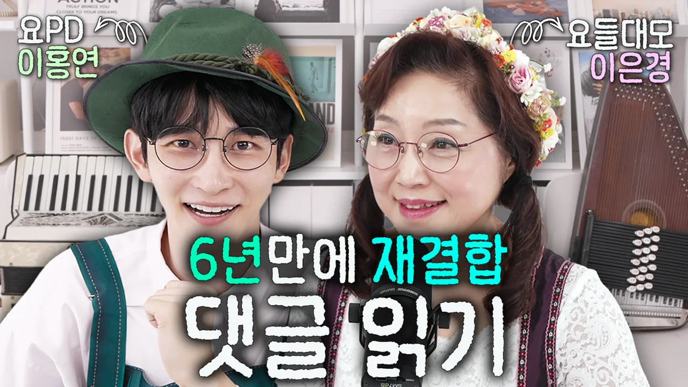
영상 보기Franzl Lang 커버 M/V 「Auf und auf voll Lebenslust」
주목도 높은 콘텐츠는 아이템도 중요하지만, 어떻게 포장하고 가공해 몰입도를 높이느냐가 핵심이라고 생각합니다. 가장 공들인 M/V 한 편의 제작 과정입니다.
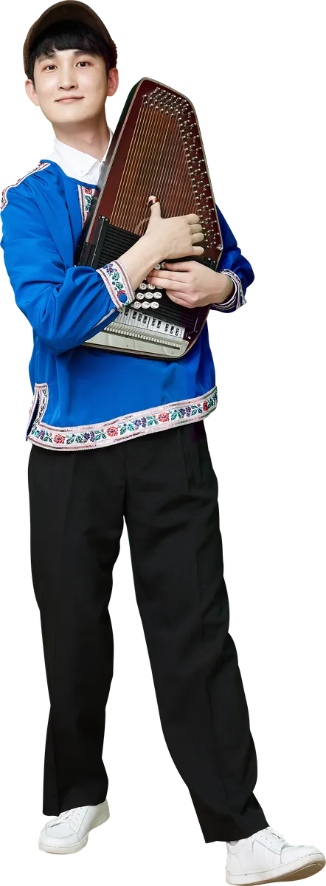
04
EBS 펭수 · MBC 〈마이 리틀 텔레비전〉 · MBN · tvN · 아프리카TV 도아TV
05
직접 기획하고 만든 캐릭터 'B봇'으로 SK그룹 영상 공모전 대상을 받았습니다.
2020 · 회사 유튜브 예능 기획 · 채널 공개는 코로나19로 보류
'Best Creator를 찾아라' 공모전. 인간형 IPTV 캐릭터 'B봇'을 기획하고 만들어 SK브로드밴드와 SK그룹의 역사를 5분씩 풀어냈습니다.

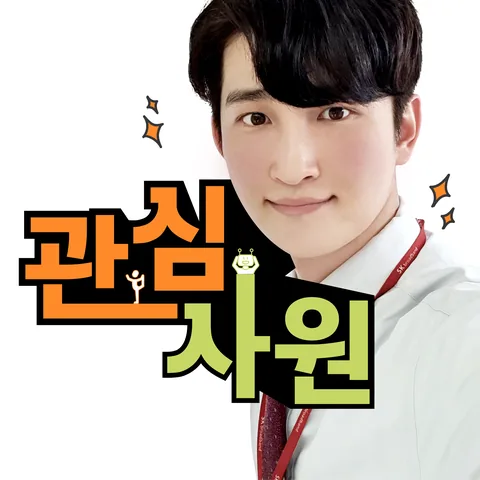
요들랜드를 잠시 멈춘 뒤, 그동안 쌓은 제작 역량으로 회사에 기여할 콘텐츠를 만들고 싶었습니다. 4차원 리얼 예능 '관심사원'을 기획하고, 요들과 바둑이 특기인 B급 직장인 '관심사원'이 메인 진행을, 'B봇'이 상대역을 맡는 구조로 설계했습니다.
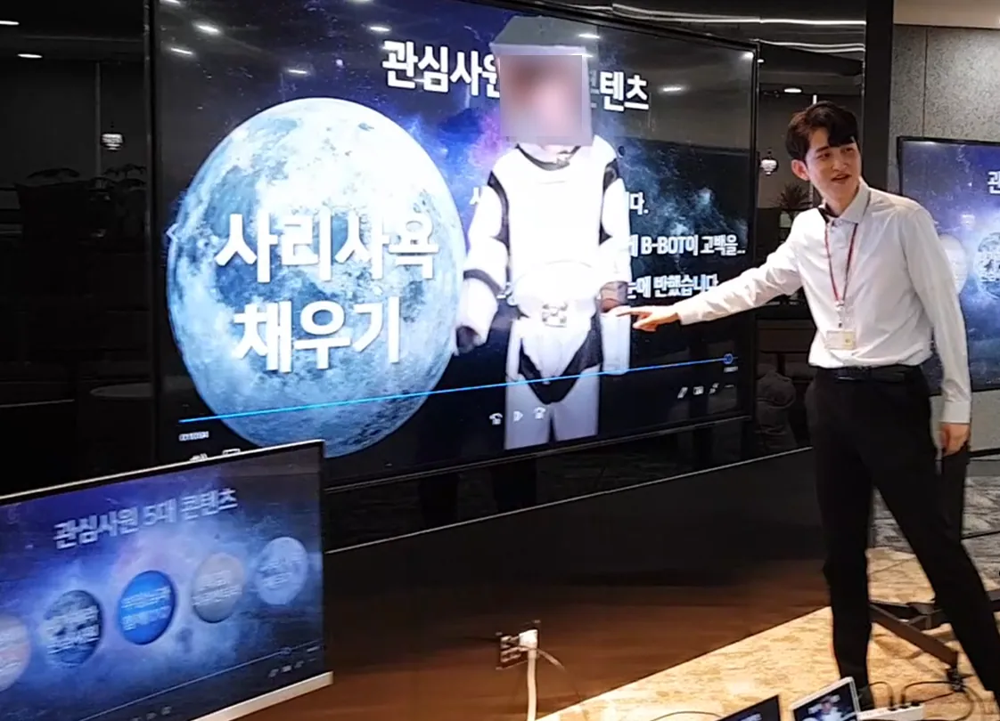
B봇 구성
회사 주력 상품인 IPTV를 머리에 쓰는 콘셉트로 '세계 최초 인간형 인공지능 IPTV' B봇을 설계하고, 탈부터 의상까지 직접 구하고 만들었습니다.
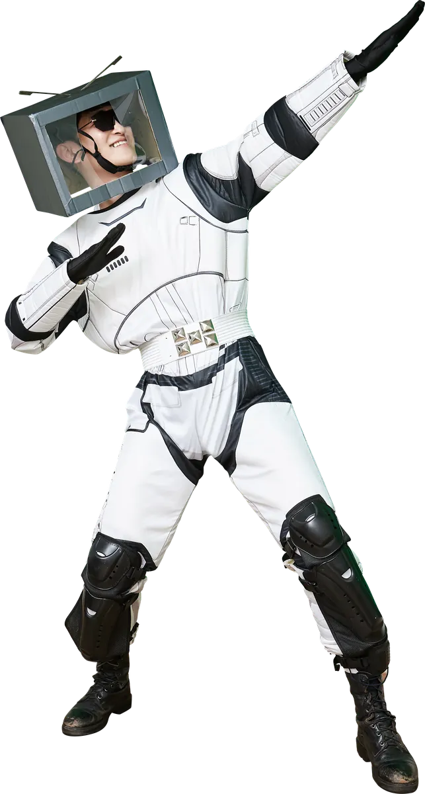
사진은 웹진 화보에서 제가 직접 입은 모습이고, 관심사원 파일럿에서는 대학 후배가 B봇을 연기했습니다. B봇은 같은 해 SK그룹 toktokTV 'Best Creator를 찾아라' 대상으로 이어졌습니다.
채널 오픈 준비 중
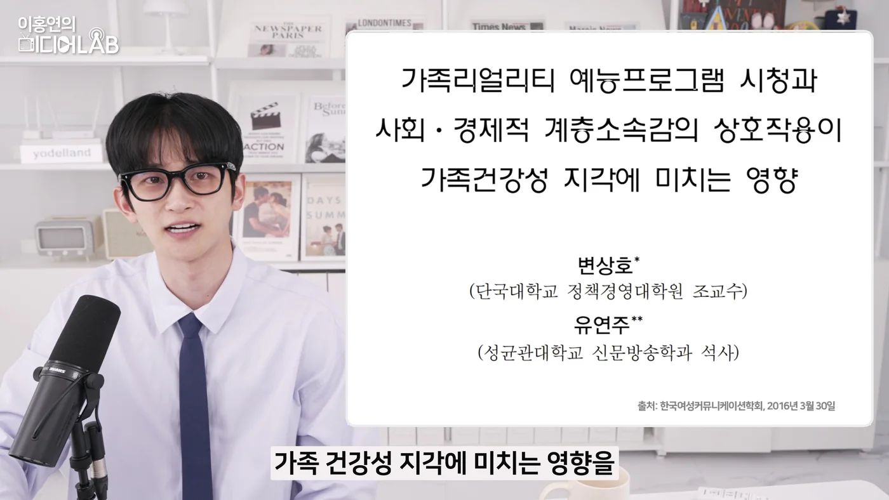
채널 준비 중제목 카피와 화면 구성을 직접 기획합니다 · 2026

직접 운영하던 유튜브 채널의 성과를 인정받아 영업팀에서 마케팅 조직으로 옮겼습니다. 구성원이 기획·촬영·출연·편집까지 맡는 임플로이언서(Employeencer) 방식으로 틱톡 채널, 라이브커머스, 중간광고, 상품 런칭 콘텐츠를 만들었습니다.
58편 · 2021.03–09
파일럿 7명에서 출발
2020.08–2023.05 누적
운영 6개월 만 · 2021.09
모든 수치는 사내 보고서·캡처 기준
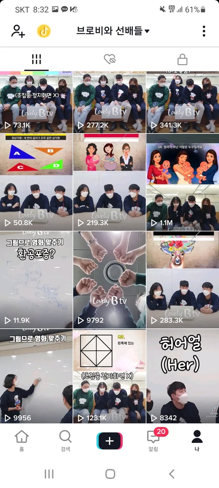
틱톡 보기2월 파일럿 12편의 조회수는 1,300회, 팔로워는 7명이었습니다. 상품 광고형이 통하지 않는다는 걸 확인하고 3월 〈브로비와 선배들〉로 다시 시작했습니다. 구성원이 퀴즈·놀이형 콘텐츠에 출연하자 100만 회를 넘는 영상이 나왔고, 6개월 만에 통신·OTT 기업 채널 중 3위에 올랐습니다.
2021년 CEO SR 추천 사례. 업계 1위 채널은 같은 성장에 18개월간 약 4.5억 원의 광고비를 썼습니다(사내 비교 자료).
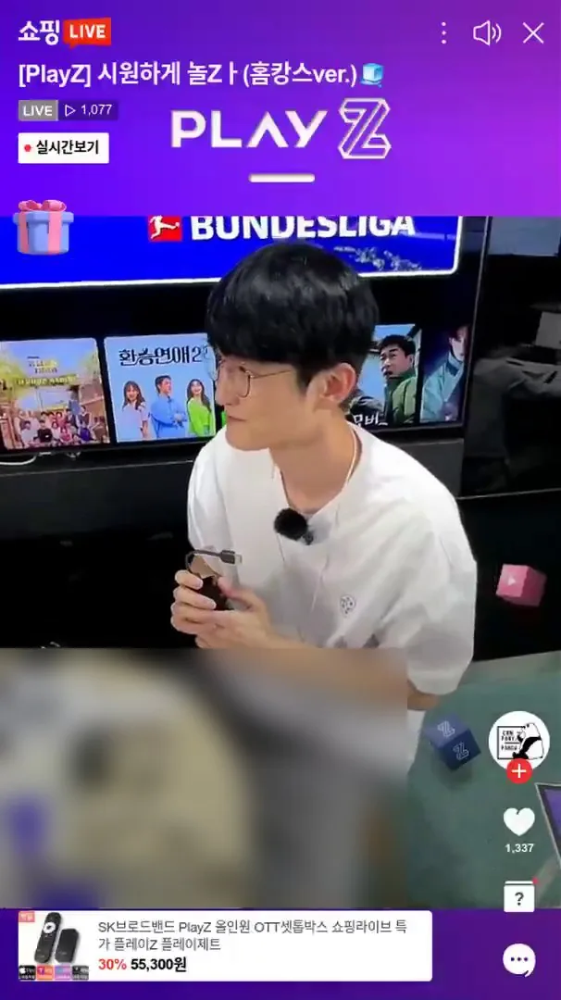
 다시보기
다시보기
OTT 이용률이 가장 높은 2030세대를 겨냥해 소구 포인트를 뽑고, 카피와 큐시트를 쓰고, 네이버 쇼핑라이브 방송 진행까지 맡았습니다.

B tv 콘텐츠의 중간광고를 기획·제작하고 출연해 상품과 서비스를 알렸습니다. 출연자가 자연스럽게 등장해 거부감 없이 메시지를 전했고, 일반 TV 광고보다 빨리 만들어 시의성 있게 노출했습니다.
산식: 누적 조회수 5,417만(2020.08–2023.05) × CPV 50원 × 콘텐츠당 광고 2개. 2022년 조회당 비용은 일반 광고보다 31% 낮았습니다.
생명·손해보험사와 저축은행 같은 제2금융권 고객을 1:1로 맡았습니다. 전용회선, 콜센터 인프라(IPCC), 전국 지점망을 고객사의 업종과 통신 환경에 맞게 설계해 제안했고, 견적부터 구축·개통, 24시간 장애 대응까지 책임졌습니다.
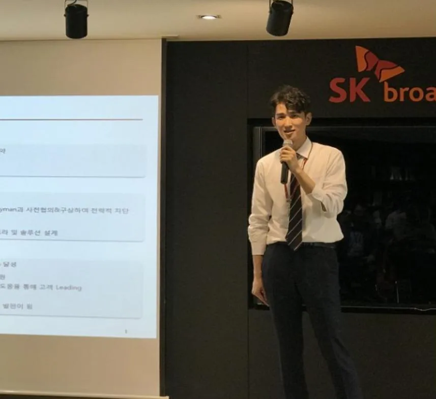
8년 장기계약. 경쟁사가 오래 점유하던 고객사를 한 건의 계약으로 전환했습니다. RFP 접수 18일 만에 우선협상대상자로 선정돼 CEO SR에 추천됐고, 사내 수주사례 발표 무대에 섰습니다.
2018.08.06 → 08.24
5% 미만에서 전환
대형 손해보험사 · 2020
제2금융권 · 2018
업종과 통신 환경을 분석해 전용회선·전송망·콜센터 인프라를 설계하고, RFP 단계부터 참여해 제안했습니다.
키맨 발굴과 견적부터 청약, 네트워크 구축, 개통, 청구까지 챙겼습니다.
대형 손해보험사 전국 지점·대리점 2,336회선을 SKB 인터넷으로 전환하는 영업을 총괄했습니다.
저축은행 그룹웨어, 클라우드 PC(VDI) 등 솔루션 업체와 협업해 금융 고객 맞춤 패키지를 제안했습니다.

 기사 보기
기사 보기미디어/콘텐츠/엔터테인먼트 산업과 디지털 플랫폼 영역, AI 기반 콘텐츠 최적화 등 AI와 빅데이터를 활용한 실증적 연구를 수행합니다.
2025-2 ~ 2026-2, 3개 학기
논문 발제, 기업 분석, 프로포절
AI가 고르고 요약하는 시대, 노출과 보상이 누구에게 가는지 봅니다.
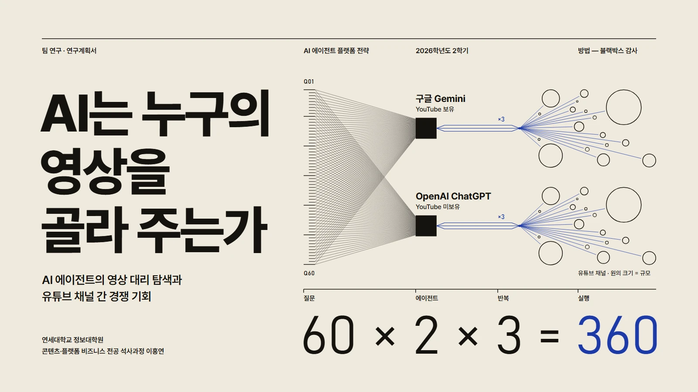
AI 에이전트의 영상 대리 탐색과 유튜브 채널 간 경쟁 기회
이용자가 AI 에이전트에게 영상 탐색을 맡길 때 어떤 규모의 채널이 노출 기회를 얻는지 묻습니다.
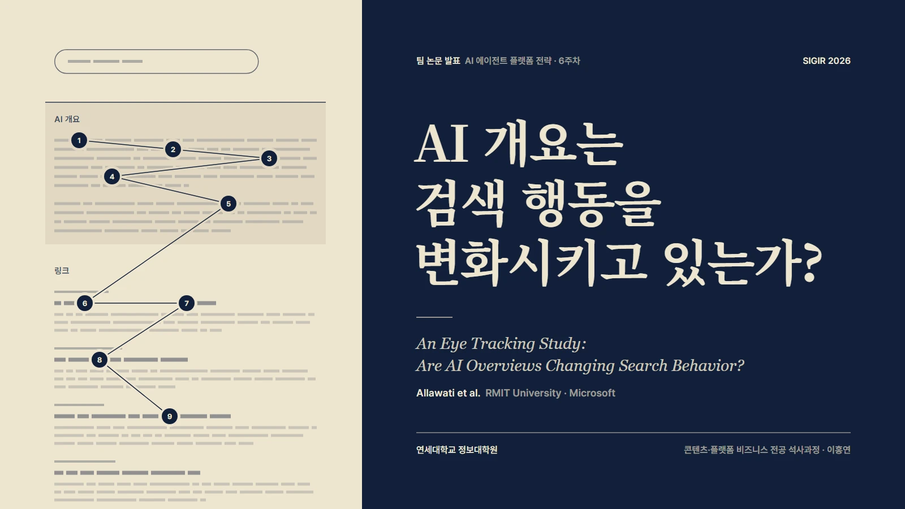
‘AI 개요(AI Overviews)는 검색 행동을 변화시키고 있는가?’
시선추적 실험을 바탕으로 SEO → GEO·AEO, 제로클릭, 출처 표시의 신뢰 설계를 짚었습니다.
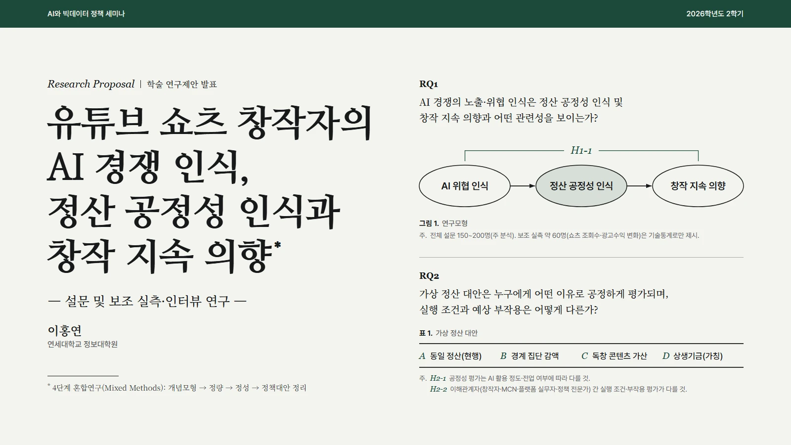
유튜브 쇼츠 창작자의 AI 경쟁 인식, 정산 공정성 인식과 창작 지속 의향
영상 생성 AI로 제작비가 크게 떨어진 상황에서 같은 정산 규칙이 여전히 공정한지 묻습니다.